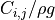
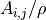
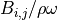
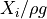
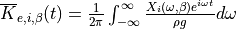

The Boundary Element Method Input/Output (BEMIO) functions are used to pre-process the BEM hydrodynamic data prior to running WEC-Sim. For more information about the WEC-Sim workflow, refer to Running WEC-Sim. BEMIO functions perform the following tasks:
Read BEM results from WAMIT, NEMOH, or AQWA.
Calculate the radiation and excitation impulse response functions (IRFs).
Calculate the state space realization for the radiation IRF.
Save the resulting data in Hierarchical Data Format 5 (HDF5).
Plot typical hydrodynamic data for user verification.
The BEMIO tutorials are included in the $WECSIM/tutorials/BEMIO directory in the WEC-Sim source code. For more information, refer to Webinar 1 - BEMIO and MCR.
Note
Previously the python based BEMIO code was used for this purpose. The python BEMIO functions have been converted to MATLAB and are included in the WEC-Sim source code. The python based BEMIO code will remain available but will no longer be supported.
BEMIO Functions¶
Read_WAMIT: Reads data from a WAMIT output file
- hydro = Read_WAMIT(hydro, filename, ex_coeff)
hydro – data structure
filename –
*.outWAMIT output fileex_coeff - flag indicating the type of excitation force coefficients to read, ‘diffraction’ (default) or ‘haskind’
Read_NEMOH: Reads data from a NEMOH working folder
- hydro = Read_NEMOH(hydro, filedir)
hydro – data structure
- filedir – NEMOH working folder, must include:
Nemoh.cal
Mesh/Hydrostatics.dat(orHydrostatiscs_0.dat,Hydrostatics_1.dat, etc. for multiple bodies)
Mesh/KH.dat(orKH_0.dat,KH_1.dat, etc. for multiple bodies)
Results/RadiationCoefficients.tec
Results/ExcitationForce.tec
Note
Instructions on how to download and use the open source BEM code NEMOH are provided on the NEMOH website.
The NEMOH Mesh.exe code creates the
Hydrostatics.datandKH.datfiles (among other files) for one input body at a time. For the Read_NEMOH function to work correctly in the case of a multiple body system, the user must manually renameHydrostatics.datandKH.datfiles toHydrostatics_0.dat,Hydrostatics_1.dat, …, andKH_0.dat,KH_1.dat,…, corresponding to the body order specified in theNemoh.calfile.
Read_AQWA: Reads data from AQWA output files
- hydro = Read_AQWA(hydro, ah1_filename, lis_filename)
hydro – data structure
ah1_filename –
*.AH1AQWA output filelis_filename –
*.LISAQWA output file
Normalize: Normalizes NEMOH and AQWA hydrodynamics coefficients in the same manner that WAMIT outputs are normalized. Specifically, the linear hydrostatic restoring stiffness is normalized as, ; the radiation added mass is normalized as, ; radiation wave damping is normalized as, ; and the wave-exciting forces are normalized as, . Typically, this function would not be called directly by the user; it is automatically implemented within the Read_NEMOH and Read_AQWA functions.
- hydro = Normalize(hydro)
hydro – data structure
Combine_BEM: Combines multiple BEM outputs into one hydrodynamic “system”. This function requires that all BEM outputs have the same water depth, wave frequencies, and wave headings. This function would be implemented following multiple Read functions and before the IRF, Write_H5, or Plot_BEMIO functions.
- hydro = Combine_BEM(hydro)
hydro – data structure
Radiation_IRF: Calculates the normalized radiation impulse response function. .. Note:
Adam:
Is this a different equation from the theory section? How does it realte to the SS or CI methods?
:math:`\overline{K}_{r,i,j}(t) = {\frac{2}{\pi}}\intop_0^{\infty}{\frac{B_{i,j}(\omega)}{\rho}}\cos({\omega}t)d\omega`
*hydro = Radiation_IRF(hydro, t_end, n_t, n_w, w_min, w_max)*
* *hydro* – data structure
* *t_end* – calculation range for the IRF, where the IRF is calculated from t = 0 to t_end, and the default is 100 s
* *n_t* – number of time steps in the IRF, the default is 1001
* *n_w* – number of frequency steps used in the IRF calculation (hydrodynamic coefficients are interpolated to correspond), the default is 1001
* *w_min* – minimum frequency to use in the IRF calculation, the default is the minimum frequency from the BEM data
* *w_max* – maximum frequency to use in the IRF calculation, the default is the maximum frequency from the BEM data.
Radiation_IRF_SS: Calculates the state space (SS) realization of the radiation IRF. If this function is used, it must be implemented after the Radiation_IRF function.
- hydro = Radiation_IRF_SS(hydro, Omax, R2t)
hydro – data structure
Omax – maximum order of the SS realization, the default is 10
R2t –
threshold (coefficient of determination) for the SS realization, where
Excitation_IRF: Calculates the excitation impulse response function.

- hydro = Excitation_IRF(hydro, t_end, n_t, n_w, w_min, w_max)
hydro – data structure
t_end – calculation range for the IRF, where the IRF is calculated from t = -t_end to t_end, and the default is 100 s
n_t – number of time steps in the IRF, the default is 1001
n_w – number of frequency steps used in the IRF calculation (hydrodynamic coefficients are interpolated to correspond), the default is 1001
w_min – minimum frequency to use in the IRF calculation, the default is the minimum frequency from the BEM data
w_max – maximum frequency to use in the IRF calculation, the default is the maximum frequency from the BEM data.
Write_H5: Writes the hydro data structure to a *.h5 file.
- Write_H5(hydro)
hydro – data structure
Note
Technically, this step should not be necessary - the MATLAB data structure hydro is written to a *.h5 file by BEMIO and then read back into a new MATLAB data structure hydroData for each body by WEC-Sim. The reasons this step was retained were, first, to remain compatible with the python based BEMIO output and, second, for the simpler data visualization and verification capabilities offered by the *.h5 file viewer.
Plot_BEMIO: Plots the radiation added mass, radiation wave damping, radiation IRF, excitation force magnitude, excitation force phase, and excitation IRF for each body in the heave, surge and pitch degrees of freedom.
- Plot_BEMIO(hydro)
hydro – data structure
BEMIO hydro Data Structure¶
Variable |
Format |
Description |
A |
[6*Nb,6*Nb,Nf] |
radiation added mass |
Ainf |
[6*Nb,6*Nb] |
infinite frequency added mass |
B |
[6*Nb,6*Nb,Nf] |
radiation wave damping |
theta |
[1,Nh] |
wave headings (deg) |
body |
{1,Nb} |
body names |
cb |
[3,Nb] |
center of buoyancy |
cg |
[3,Nb] |
center of gravity |
code |
string |
BEM code (WAMIT, AQWA, or NEMOH) |
dof |
[6 + GBM, Nb] |
Degrees of freedom (DOF) for each body. Default DOF for each body is 6 plus number of possible generalized body modes (GBM). |
exc_im |
[6*Nb,Nh,Nf] |
imaginary component of excitation force or torque |
exc_K |
[6*Nb,Nh,length(ex_t)] |
excitation IRF |
exc_ma |
[6*Nb,Nh,Nf] |
magnitude of excitation force or torque |
exc_ph |
[6*Nb,Nh,Nf] |
phase of excitation force or torque |
exc_re |
[6*Nb,Nh,Nf] |
real component of excitation force or torque |
exc_t |
[1,length(ex_t)] |
time steps in the excitation IRF |
exc_w |
[1,length(ex_w)] |
frequency step in the excitation IRF |
file |
string |
BEM output filename |
fk_im |
[6*Nb,Nh,Nf] |
imaginary component of Froude-Krylov contribution to the excitation force or torque |
fk_ma |
[6*Nb,Nh,Nf] |
magnitude of Froude-Krylov excitation component |
fk_ph |
[6*Nb,Nh,Nf] |
phase of Froude-Krylov excitation component |
fk_re |
[6*Nb,Nh,Nf] |
real component of Froude-Krylov contribution to the excitation force or torque |
g |
[1,1] |
gravity |
h |
[1,1] |
water depth |
Khs |
[6,6,Nb] |
hydrostatic restoring stiffness |
Nb |
[1,1] |
number of bodies |
Nf |
[1,1] |
number of wave frequencies |
Nh |
[1,1] |
number of wave headings |
ra_K |
[6*Nb,6*Nb,length(ra_t)] |
radiation IRF |
ra_t |
[1,length(ra_t)] |
time steps in the radiation IRF |
ra_w |
[1,length(ra_w)] |
frequency steps in the radiation IRF |
rho |
[1,1] |
density |
sc_im |
[6*Nb,Nh,Nf] |
imaginary component of scattering contribution to the excitation force or torque |
sc_ma |
[6*Nb,Nh,Nf] |
magnitude of scattering excitation component |
sc_ph |
[6*Nb,Nh,Nf] |
phase of scattering excitation component |
sc_re |
[6*Nb,Nh,Nf] |
real component of scattering contribution to the excitation force or torque |
ss_A |
[6*Nb,6*Nb,ss_O,ss_O] |
state space A matrix |
ss_B |
[6*Nb,6*Nb,ss_O,1] |
state space B matrix |
ss_C |
[6*Nb,6*Nb,1,ss_O] |
state space C matrix |
ss_conv |
[6*Nb,6*Nb] |
state space convergence flag |
ss_D |
[6*Nb,6*Nb,1] |
state space D matrix |
ss_K |
[6*Nb,6*Nb,length(ra_t)] |
state space radiation IRF |
ss_O |
[6*Nb,6*Nb] |
state space order |
ss_R2 |
[6*Nb,6*Nb] |
state space R2 fit |
T |
[1,Nf] |
wave periods |
Vo |
[1,Nb] |
displaced volume |
omega |
[1,Nf] |
wave frequencies |
Writing Your Own h5 File¶
The most common way of creating a *.h5 file is using BEMIO to post-process the outputs of a BEM code.
This requires a single BEM solution that contains all hydrodynamic bodies and accounts for body-to-body interactions.
Some cases in which you might want to create your own h5 file are:
Use experimentally determined coefficients or a mix of BEM and experimental coefficients.
Combine results from different BEM files and have the coefficient matrices be the correct size for the new total number of bodies.
Modify the BEM results for any other reason.
MATLAB and Python have functions to read and write *.h5 files easily.
WEC-Sim includes three functions to help you create your own *.h5 file.
These are found under $WECSIM/functions/writeH5/.
The header comments of each function explain the inputs and outputs.
An example of how to use write_hdf5 is provided in the WEC-Sim Applications repository.
The first step is to have all the required coefficients and properties in Matlab in the correct format.
Then the functions provided are used to create and populate the *.h5 file.